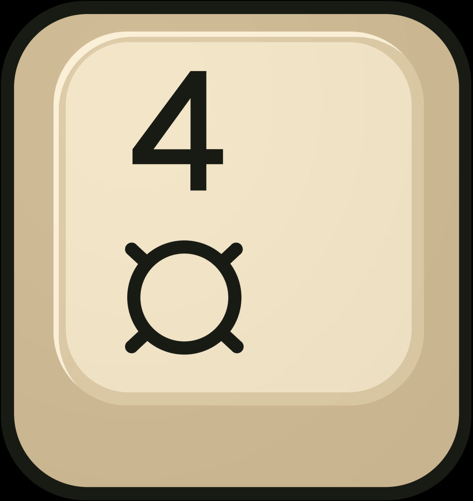
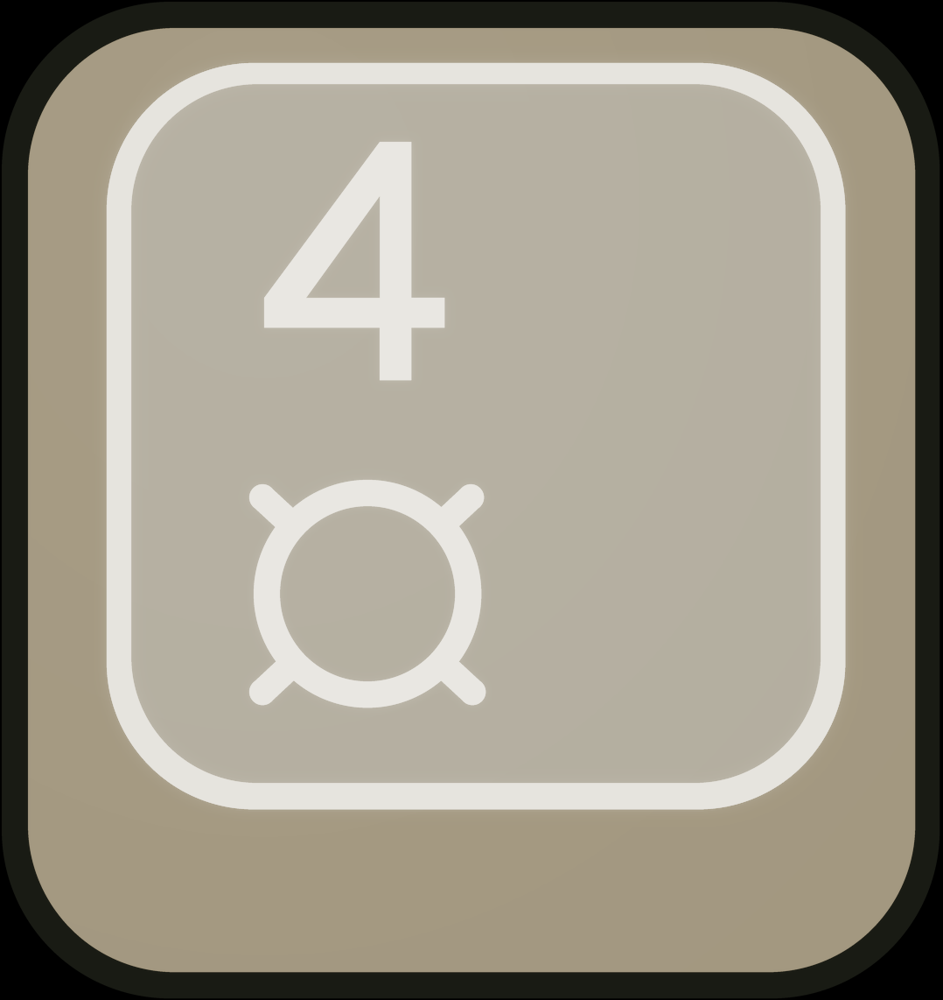

A backlit ivory key.
The 4, currency symbol, and inner rim illuminate in the HDR rendition. In the SDR base, both symbols stay black.

Real Ultra HDR JPEG. Extra illumination requires HDR gain-map support and sufficient display headroom.
Checking display capability...
If HDR is not working: see an SDR illustration of the lit design
This is a tone-mapped illustration, not HDR. It shows the intended warm-white lighting without requiring an HDR screen.
